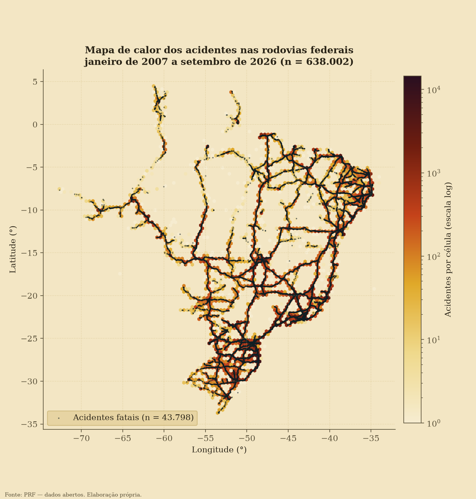
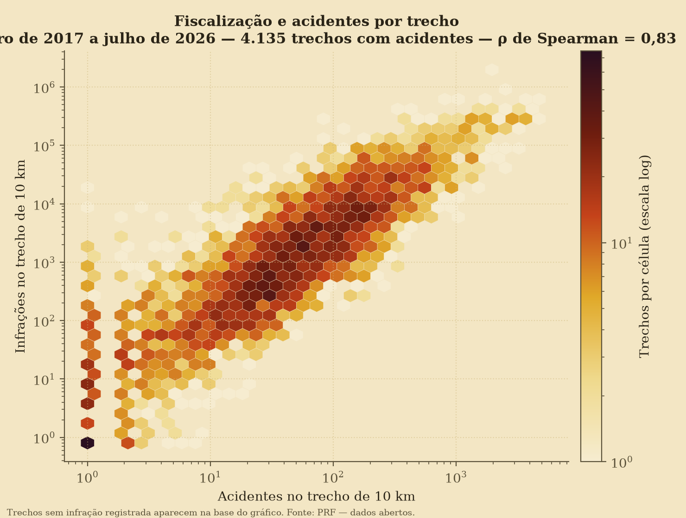

Resumo
Este estudo analisa 1.753.482 acidentes registrados pela Polícia Rodoviária Federal (PRF) nas rodovias federais brasileiras (janeiro de 2007 a setembro de 2026), que deixaram 106.678 mortos e 56.889.309 autos de infração (janeiro de 2017 a julho de 2026). Um pipeline determinístico em Python (pandas, NumPy, SciPy) integra quatro bases abertas — ocorrências, envolvidos, todas as causas e tipos e infrações —, trata inconsistências de forma rastreável e alimenta visualizações interativas. Três perguntas orientam a análise: quando a gravidade se concentra, quais causas e perfis se associam a mais mortes e se a fiscalização acompanha a geografia dos acidentes. Acidentes em plena noite têm 3,0× a chance de serem fatais em relação aos diurnos (2,1× após ajuste por tipo de pista e área urbana/rural); pedestres morrem em 25,6% dos casos e motociclistas respondem por 30,6% dos óbitos com 11,4% dos envolvidos. Entre as UFs, infrações e acidentes são fortemente associados (ρ de Spearman = 0,96), mas 57,6% dos acidentes fatais ocorrem entre 18h e 6h, janela com apenas 24,8% das infrações. Os resultados indicam associações, não causalidade, e o repositório incorpora novos anos apenas com a adição de CSVs à pasta de dados brutos.
Palavras-chave: acidentes de trânsitorodovias federaisfiscalizaçãodados abertosanálise exploratóriaFAIR
Abstract
We analyse 1,753,482 road accidents recorded by Brazil's Federal Highway Police (PRF) between 2007-01-01 and 2026-09-30, with 106,678 deaths and 56,889,309 traffic-violation records. A deterministic Python pipeline (pandas, NumPy, SciPy) integrates four open datasets — accidents, people involved, all causes and types, and violations — and logs every cleaning rule. Three research questions guide the study: when severity concentrates, which causes and road-user profiles are linked to more deaths, and whether enforcement follows the geography of accidents. Night-time accidents are 3.0 times as likely to be fatal as daytime ones (2.1 after adjustment for road type and urban/rural setting); pedestrians die in 25.6% of cases, and motorcyclists account for 30.6% of deaths while making up 11.4% of those involved. Across states, violations track accident counts closely (Spearman ρ = 0.96), yet 57.6% of fatal accidents happen between 6 pm and 6 am, when only 24.8% of violations are issued. Findings are associations, not causal effects; new years can be added by dropping CSVs into the raw-data folder.
Keywords: traffic accidentsfederal highwaystraffic enforcementopen dataexploratory data analysisFAIR principles
1 Introdução
As rodovias federais concentram parte expressiva do transporte brasileiro de cargas e de passageiros e, por isso, também uma parcela relevante das mortes no trânsito. A Polícia Rodoviária Federal (PRF) registra cada ocorrência que atende e publica os microdados como dados abertos (BRASIL, [s.d.]a), o que permite auditar o problema com rigor e reprodutibilidade. A Organização Mundial da Saúde (2023) lembra que as lesões no trânsito seguem entre as principais causas de morte evitável no mundo, e que velocidade, álcool, ausência de equipamentos de proteção e vulnerabilidade dos usuários figuram entre os fatores centrais — hipóteses que os dados da PRF permitem examinar na realidade brasileira.
Este trabalho integra quatro bases abertas da PRF — ocorrências, pessoas e veículos envolvidos, todas as causas e tipos registrados em cada acidente e autos de infração — num único pipeline em Python. A pergunta de fundo é se o que se sabe sobre quando e por que as pessoas morrem nas estradas se reflete em onde e como o Estado fiscaliza. Formulamos três perguntas de pesquisa:
2 Metodologia e pipeline de dados
2.1 Fontes e granularidade
Todos os dados vêm dos dados abertos da PRF (acidentes: BRASIL, [s.d.]a; infrações: BRASIL, [s.d.]b) e foram lidos exatamente como fornecidos, em data/raw/. O pipeline identifica o tipo de cada CSV pelo cabeçalho, não pelo nome do arquivo, o que permite incorporar anos adicionais sem alterar código (Seção 5). A Tabela 1 resume o que foi ingerido.
| Base (tipo) | Granularidade | Arquivos | Linhas lidas | Período | Tabelas processadas (linhas) |
|---|---|---|---|---|---|
| Ocorrências (datatran) | 1 linha = 1 acidente | datatran2026.csv, datatran2007.csv, datatran2008.csv, datatran2009.csv, datatran2010.csv, datatran2011.csv, datatran2012.csv, datatran2013.csv, datatran2014.csv, datatran2015.csv, datatran2016.csv, datatran2017.csv, datatran2018.csv, datatran2019.csv, datatran2020.csv, datatran2021.csv, datatran2022.csv, datatran2023.csv, datatran2024.csv, datatran2025.csv | 2.249.808 | janeiro de 2007 a setembro de 2026 | ocorrencias 2.249.773 |
| Pessoas e veículos envolvidos | 1 linha = 1 pessoa × veículo | acidentes2026.csv, acidentes2009.csv, acidentes2010.csv, acidentes2011.csv, acidentes2012.csv, acidentes2013.csv, acidentes2014.csv, acidentes2015.csv, acidentes2016_atual.csv, acidentes2017.csv, acidentes2018.csv, acidentes2019.csv, acidentes2020.csv, acidentes2021.csv, acidentes2022.csv, acidentes2023.csv, acidentes2024.csv, acidentes2025.csv | 4.604.463 | janeiro de 2009 a setembro de 2026 | pessoas 4.604.409 |
| Todas as causas e tipos | 1 linha = pessoa × causa × tipo (reduzida a acidente × causa e acidente × tipo) | acidentes2026_todas_causas_tipos.csv, acidentes2017_todas_causas_tipos.csv, acidentes2018_todas_causas_tipos.csv, acidentes2019_todas_causas_tipos.csv, acidentes2020_todas_causas_tipos.csv, acidentes2021_todas_causas_tipos.csv, acidentes2022_todas_causas_tipos.csv, acidentes2023_todas_causas_tipos.csv, acidentes2024_todas_causas_tipos.csv, acidentes2025_todas_causas_tipos.csv | 4.528.217 | janeiro de 2017 a setembro de 2026 | causas 943.374; tipos 1.062.426 |
| Infrações (autos) | 1 linha = 1 auto de infração | infraçoes2026_07.csv, abr.csv, ago.csv, dez.csv, fev.csv, infracoes_2019_01.csv, infracoes_2019_02.csv, infracoes_2019_03.csv, infracoes_2019_04.csv, infracoes_2019_05.csv, infracoes_2019_06.csv, infracoes_2019_07.csv, infracoes_2019_08.csv, infracoes_2019_09.csv, infracoes_2019_10.csv, infracoes_2019_11.csv, infracoes_2019_12.csv, infracoes_2020_01.csv, infracoes_2020_02.csv, infracoes_2020_03.csv, infracoes_2020_04.csv, infracoes_2020_05.csv, infracoes_2020_06.csv, infracoes_2020_07.csv, infracoes_2020_08.csv, infracoes_2020_09.csv, infracoes_2020_10.csv, infraçoes2021_01.csv, infraçoes2021_02.csv, infraçoes2021_03.csv, infraçoes2021_04.csv, infraçoes2021_05.csv, infraçoes2021_06.csv, infraçoes2021_07.csv, infraçoes2021_08.csv, infraçoes2021_09.csv, infraçoes2021_10.csv, infraçoes2021_11.csv, infraçoes2021_12.csv, infraçoes2022_01.csv, infraçoes2022_02.csv, infraçoes2022_03.csv, infraçoes2022_04.csv, infraçoes2022_05.csv, infraçoes2022_06.csv, infraçoes2022_07.csv, infraçoes2022_08.csv, infraçoes2022_09.csv, infraçoes2022_10.csv, infraçoes2022_11.csv, infraçoes2022_12.csv, infraçoes2023_01.csv, infraçoes2023_02.csv, infraçoes2023_03.csv, infraçoes2023_04.csv, infraçoes2023_05.csv, infraçoes2023_06.csv, infraçoes2023_07.csv, infraçoes2023_08.csv, infraçoes2023_09.csv, infraçoes2023_10.csv, infraçoes2023_11.csv, infraçoes2023_12.csv, infraçoes2024_01.csv, infraçoes2024_02.csv, infraçoes2024_03.csv, infraçoes2024_04.csv, infraçoes2024_05.csv, infraçoes2024_07.csv, infraçoes2024_08.csv, infraçoes2024_09.csv, infraçoes2024_10.csv, infraçoes2024_11.csv, infraçoes2024_12a.csv, infraçoes2024_12b.csv, infraçoes2025_01.csv, infraçoes2025_02.csv, infraçoes2025_03.csv, infraçoes2025_04.csv, infraçoes2025_05.csv, infraçoes2025_06.csv, infraçoes2025_07.csv, infraçoes2025_08.csv, infraçoes2025_09.csv, infraçoes2025_10.csv, infraçoes2025_11.csv, infraçoes2025_12.csv, infraçoes2026_01.csv, infraçoes2026_02.csv, infraçoes2026_03.csv, infraçoes2026_04.csv, infraçoes2026_05.csv, infraçoes2026_06.csv, infraçoes_2020_11.csv, infraçoes_2020_12.csv, jan.csv, jul.csv, jun.csv, mai.csv, mar.csv, nov.csv, out.csv, set.csv | 57.337.707 | janeiro de 2017 a julho de 2026 | infracoes 57.337.675 |
Os arquivos usam codificação CP1252/Latin-1, separador “;”, vírgula decimal e o literal NA para ausentes; o ETL detecta codificação e separador automaticamente. As quatro bases se relacionam pelo identificador da ocorrência (id), exceto as infrações, que só se ligam aos acidentes por local (UF, BR e quilômetro) e tempo (data e hora). Por isso, os cruzamentos da RQ3 usam apenas os meses cobertos pelas duas fontes (janeiro de 2017 a julho de 2026).
2.2 Tratamento dos dados
O ETL (src/etl.py) é idempotente (cada CSV é identificado por SHA-256), incremental e rastreável: nenhum valor é corrigido em silêncio — cada regra aplicada é contabilizada em data/processed/manifest.json e listada na Tabela 2. Valores inválidos são anulados (viram nulos), e a linha é preservada, para não introduzir viés de seleção. Partições substituídas por reingestão são arquivadas, nunca apagadas. Os dados tratados são gravados em .csv.gz, particionados por tabela e mês.
| Tratamento | Registros afetados |
|---|---|
| Ano de fabricação impossível anulado | 195 |
| Ano de fabricação 0 (sem veículo) anulado | 160.483 |
| BR = 0 (local não informado) convertida em nulo | 1.595 |
| Classificação de gravidade ausente derivada de mortos/feridos | 12 |
| Coordenadas fora do território brasileiro anuladas | 54 |
| Datas inválidas ou ausentes | 312.624 |
| Identificadores em notação científica (ex.: 8e+05) convertidos em inteiro | 90 |
| Idade acima de 110 anos anulada | 2.571 |
| Idade 0 usada como sentinela (estado físico “Não Informado”) anulada | 102.678 |
| Linhas de veículo sem pessoa registrada (pesid = 0) sinalizadas | 157.710 |
| Alerta: classificação “sem fatais” com mortos registrados (mantida) | 1 |
| Autos de infração duplicados removidos | 32 |
| Ocorrências duplicadas removidas | 35 |
| Linhas de pessoa/veículo duplicadas removidas | 54 |
| Informação: campo “assinatura do auto” sem valor (N/I) em todos os registros | 21.847.689 |
| Informação: autos do layout antigo sem número do auto receberam chave sintética | 6.023.833 |
Três achados merecem destaque. (i) Um identificador de acidente foi corrompido para notação científica (8e+05, isto é, 800000) na origem, o que faria o parser tratar a coluna inteira como decimal; (ii) o arquivo de pessoas usa pesid = 0 e idade = 0 como sentinelas (veículo sem pessoa registrada; idade ignorada); e (iii) o campo “Indicador Veículo Estrangeiro” das infrações contém hoje o código do país (BR, PY, 99…), divergindo do dicionário de 2016 (S/N), o que o ETL reconcilia. Também derivamos métricas: letalidade (mortos por 100 acidentes), indicador de acidente fatal, grupo de veículo, grupo temático de infração (pelo artigo do CTB) e o limite de velocidade implícito (velocidade considerada menos excesso verificado).
def to_num(s: pd.Series) -> pd.Series:
"""Converte para float aceitando vírgula decimal e notação científica."""
txt = s.astype("object")
txt = txt.where(txt.isna(), txt.astype(str).str.replace(",", ".", regex=False).str.strip())
return pd.to_numeric(txt, errors="coerce").astype("float64")
def parse_dates(s: pd.Series) -> pd.Series:
"""Aceita AAAA-MM-DD (padrão atual) e DD/MM/AAAA (arquivos antigos)."""
head = s.astype("object")
head = head.where(head.isna(), head.astype(str).str.slice(0, 10))
out = pd.to_datetime(head, format="%Y-%m-%d", errors="coerce")
missing = out.isna() & head.notna()
if missing.any():
out2 = pd.to_datetime(head[missing], format="%d/%m/%Y", errors="coerce")
out = out.copy()
out[missing] = out2
return outdef detect_kind(columns: list[str]) -> str | None:
cols = set(columns)
if len(cols & set(INFRACAO_ALIASES)) >= 8:
return "infracoes"
if {"causa_principal", "ordem_tipo_acidente"} & cols and "causa_acidente" in cols:
return "causas_tipos"
if "pesid" in cols and "id_veiculo" in cols:
return "pessoas"
if {"pessoas", "veiculos", "mortos", "causa_acidente"} <= cols:
return "ocorrencias"
return None2.3 Métodos estatísticos
Proporções vêm com intervalos de Wilson (1927) a 95%. Associações entre gravidade e fatores binários são medidas por odds ratio (OR) com IC 95% de Woolf e teste qui-quadrado (AGRESTI, 2013); para a comparação noite × dia, também reportamos o OR de Mantel-Haenszel estratificado por tipo de pista e área urbana/rural, com variância de Robins, Breslow e Greenland (1986). Associações entre contagens (UF, BR, trecho de 10 km, hora) usam a correlação de postos de Spearman, robusta a assimetrias e outliers (VIRTANEN et al., 2020). Em todo o texto, “fatal” significa acidente com ao menos um morto e “letalidade” é mortos por 100 acidentes. As análises usam pandas (MCKINNEY, 2010), NumPy (HARRIS et al., 2020) e SciPy; as figuras estáticas, Matplotlib (HUNTER, 2007), e as interativas, D3 (BOSTOCK; OGIEVETSKY; HEER, 2011).
3 Resultados e discussão
3.1 RQ1 — Quando acontecem os acidentes e as mortes?
No período janeiro de 2007 a setembro de 2026, a PRF registrou 1.753.482 acidentes (média de 256,1 por dia), com 106.678 mortos e 1.398.483 feridos; 5,1% dos acidentes foram fatais. O mês com mais acidentes completos foi dezembro/2010 (18.929) e o de menor movimento, julho/2026 (178).
O padrão semanal e horário (Figura 2) mostra que o volume de acidentes se concentra no fim da tarde — o pico é às 18h (133.442 acidentes) —, enquanto a gravidade se concentra na madrugada: a maior proporção de acidentes fatais ocorre às 03h (9,2%, IC 95% 8,9–9,6%, entre horas com ao menos 200 acidentes). Fins de semana têm mais acidentes por dia (263,7 contra 233,4 em dias úteis) e maior proporção de fatais (6,5% contra 4,5%; OR = 1,47 (IC 95%: 1,45–1,50); p < 0,001).
A Figura 3 compara a letalidade entre as fases do dia; a maior proporção de acidentes fatais está no plena noite (9,7%). Acidentes em plena noite foram fatais em 9,7% dos casos, contra 3,4% em pleno dia. A chance de um acidente noturno ser fatal é 3,04× a de um acidente diurno (OR = 3,04 (IC 95%: 2,99–3,09); p < 0,001). A associação persiste após estratificar por tipo de pista e área urbana/rural (ORMH = 2,13 (IC 95%: 2,08–2,17)), o que reduz — mas não elimina — a hipótese de que a noite apenas reflita estradas mais perigosas.
Resposta à RQ1. O volume de acidentes é diurno e vespertino; a gravidade é noturna e de madrugada. Acidentes de plena noite têm cerca de 3,0× a chance de serem fatais (2,1× após ajuste), e fins de semana têm 1,47× a chance dos dias úteis.
Discussão. Esse descompasso entre frequência e gravidade é coerente com mecanismos amplamente discutidos na literatura de segurança viária: menor visibilidade, sonolência e fadiga, tráfego menos denso que favorece velocidades mais altas e maior prevalência de álcool à noite e aos fins de semana. Os dados da PRF, porém, não medem exposição (veículos-quilômetro por hora), de modo que a análise descreve a gravidade condicional à ocorrência, não o risco por viagem; é possível que haja menos acidentes à noite simplesmente porque circulam menos veículos.
3.2 RQ2 — Quais causas, tipos e perfis estão associados à gravidade?
O arquivo datatran traz uma única causa por acidente; o arquivo “todas as causas e tipos” revela que 24,5% dos acidentes têm mais de uma causa registrada (média de 1,37). A Figura 4 contrapõe as causas citadas em qualquer posição com as que foram eleitas causa principal. As mais citadas foram falta de atenção à condução; velocidade incompatível; reação tardia ou ineficiente do condutor.
Em letalidade, porém, o ranking muda: entre as causas com ao menos 1753 acidentes, as mais associadas a mortes são “pedestre andava na pista” (42,2% fatais, n = 3.306), “entrada inopinada do pedestre” (29,9% fatais, n = 3.380) e “falta de atenção do pedestre” (29,7% fatais, n = 8.076). A gravidade também cresce com o número de causas registradas: 5,5% de fatais com 1 causa, 8,6% de fatais com 2 causas, 11,6% de fatais com 3 causas, 16,0% de fatais com 4+ causas (OR de “mais de uma causa” = 1,92 (IC 95%: 1,88–1,96)). Essa relação deve ser lida com cautela: acidentes graves são investigados mais a fundo e tendem a registrar mais causas (viés de detecção), de modo que a multiplicidade pode ser parte consequência, parte sinal de gravidade.
Entre as combinações mais comuns, a causa principal “reação tardia ou ineficiente do condutor” vem acompanhada de “velocidade incompatível” em 5.908 acidentes.
Quanto ao tipo, “colisão traseira” é o mais frequente (432.221 acidentes, 2,0% fatais), mas o mais letal entre os tipos com volume relevante é “atropelamento de pedestre” (28,3% fatais, 8.298 mortos). Além disso, 37,1% dos acidentes envolvem mais de um tipo em sequência (por exemplo, uma colisão seguida de capotamento); os encadeados são fatais em 8,7% dos casos, contra 5,4% dos de tipo único.
O perfil do envolvido é o fator mais discriminante (Figura 6). Entre 3.373.536 envolvidos com estado físico informado, 25,6% dos pedestres morreram — 25,8 vezes a taxa dos ocupantes de automóveis (1,0%) — embora representem apenas 1,0% dos envolvidos e 15,8% dos óbitos. Motociclistas somam 11,4% dos envolvidos e 30,6% dos óbitos, com chance de óbito 4,6× a de ocupantes de automóveis (OR = 4,58 (IC 95%: 4,49–4,68)).
Entre os óbitos, 81,6% são de homens, que representam 81,8% dos envolvidos com sexo informado; a idade mediana dos óbitos é 39,0 anos, com concentração em idades produtivas (Figura 7).
Resposta à RQ2. A frequência é dominada por falhas de atenção e reação do condutor e por colisões traseiras; a gravidade está ligada a eventos que expõem usuários vulneráveis (atropelamentos, contramão, queda de motocicleta) e a acidentes encadeados ou multicausais. Pedestres e motociclistas formam o grupo de maior risco de óbito, e homens em idade produtiva, o de maior número absoluto.
Discussão. A divergência entre as causas mais comuns e as mais letais tem implicação prática: campanhas focadas em frequência (distância de segurança, atenção) e intervenções focadas em gravidade (separação de pedestres, travessias, proteção a motociclistas) atuam em frentes diferentes. As causas são atribuídas pelo agente no atendimento, e termos como “ausência de reação do condutor” são categorias residuais, que podem esconder sono, distração ou mal súbito.
3.3 RQ3 — A fiscalização acompanha os acidentes?
As infrações cobrem janeiro de 2017 a julho de 2026: foram 56.889.309 autos, dos quais 57,4% por excesso de velocidade e 74,7% sem abordagem do condutor — perfil típico de fiscalização eletrônica. O excesso médio verificado foi de 9,9 km/h (mediana 8; percentil 90 = 20), e 2,9% dos autos de velocidade superam 30 km/h acima do limite. Os limites mais autuados são 60 km/h (33,6%), 80 km/h (27,8%) e 100 km/h (10,0%). Como acidentes e infrações só coincidem em janeiro de 2017 a julho de 2026, as comparações a seguir usam esse recorte: 562.114 acidentes, 45.396 mortos e 56.889.309 infrações (101,2 infrações por acidente).
Onde. Entre as UFs, o volume de infrações acompanha de perto o de acidentes (ρ de Spearman = 0,96, n = 27, p < 0,001); com mortos, ρ = 0,84. No ajuste log-log, a inclinação é 1,04 (R² = 0,90): dobrar os acidentes de uma UF está associado a cerca de 2,1× mais infrações, isto é, uma relação aproximadamente proporcional. Por rodovia, a associação permanece forte (ρ = 0,96, n = 106 BRs com ao menos 30 acidentes) e, por trecho de 10 km, é moderada (ρ = 0,83, n = 3.744 trechos com ao menos 3 acidentes). Dos 100 trechos com mais acidentes, 65 também estão entre os 100 mais autuados. A intensidade relativa varia muito: RJ tem 22.139 infrações por 100 acidentes (com apenas 42.393 acidentes no período) e AC, 4.404 (2.122 acidentes).


Quando. A fiscalização é predominantemente diurna: só 24,8% das infrações ocorrem entre 18h e 6h, enquanto essa janela concentra 41,4% dos acidentes e 57,6% dos acidentes fatais (Figura 13). O perfil horário das infrações acompanha o dos acidentes em geral (ρ = 0,70), mas não o dos acidentes fatais (ρ = -0,02, p = 0,926). Diariamente, infrações e acidentes também caminham juntos (ρ = 0,13, n = 3088 dias).
Com quem. Há também descompasso por tipo de veículo (Figura 14): motocicletas respondem por 9,6% das infrações e 22,2% dos veículos em acidentes (razão 0,43×); automóvel e utilitários respondem por 65,3% das infrações e 46,0% dos veículos em acidentes (razão 1,42×). Esse resultado não prova que motocicletas sejam “menos fiscalizadas”: radares fotografam placas de modos diferentes e o campo “sem abordagem” sugere fiscalização majoritariamente eletrônica; a explicação é uma hipótese que estes dados não testam.
| BR | Acidentes | Mortos | Infrações | Infrações por 100 acidentes |
|---|---|---|---|---|
| BR-101 | 95.047 | 5.467 | 13.191.531 | 13.879 |
| BR-116 | 84.824 | 5.757 | 11.840.738 | 13.959 |
| BR-381 | 27.516 | 1.623 | 2.798.925 | 10.172 |
| BR-40 | 26.761 | 1.583 | 3.035.284 | 11.342 |
| BR-153 | 21.803 | 2.056 | 2.336.614 | 10.717 |
| BR-163 | 18.499 | 1.568 | 2.979.944 | 16.109 |
| BR-364 | 18.087 | 1.458 | 1.792.554 | 9.911 |
| BR-277 | 16.496 | 1.259 | 1.078.960 | 6.541 |
| BR-376 | 15.018 | 1.015 | 1.024.135 | 6.819 |
| BR-262 | 14.479 | 1.231 | 567.156 | 3.917 |
| BR-470 | 12.880 | 757 | 365.347 | 2.836 |
| BR-230 | 11.617 | 1.215 | 825.182 | 7.103 |
| BR-282 | 10.936 | 767 | 332.435 | 3.040 |
| BR-316 | 10.095 | 1.541 | 970.691 | 9.616 |
| BR-60 | 8.872 | 553 | 889.022 | 10.020 |
Resposta à RQ3. A fiscalização acompanha a escala dos acidentes (UF, rodovia, dia e hora de maior movimento), mas não a sua gravidade: as infrações concentram-se de dia, em velocidade e em automóveis, enquanto as mortes se concentram à noite e entre usuários vulneráveis.
Discussão. A forte correlação por UF é, em boa medida, um efeito de escala: estados com mais tráfego, mais quilômetros de rodovia e mais efetivo geram simultaneamente mais acidentes e mais autos. Por isso, o dado informativo não é a correlação, e sim os desvios dela — como a baixa presença noturna — que sugerem onde a política de fiscalização poderia ser reponderada para a gravidade e não apenas para o volume. A direção causal é ambígua: a fiscalização pode ser instalada onde há acidentes e, ao mesmo tempo, reduzi-los.
4 Conclusão
Síntese. Integrando quatro bases abertas da PRF, mostramos que (RQ1) a gravidade dos acidentes segue um calendário diferente do volume — noite, madrugada e fins de semana são desproporcionalmente letais, mesmo após ajuste por tipo de pista e área urbana/rural; (RQ2) as causas mais frequentes não são as mais letais, e pedestres e motociclistas concentram o risco de óbito; e (RQ3) a fiscalização acompanha o volume de acidentes por local e dia, mas é predominantemente diurna, de velocidade e voltada a automóveis, ao passo que as mortes se concentram à noite e entre usuários vulneráveis.
Limitações. (i) Os dados descrevem a rede federal e não permitem inferir sobre estradas estaduais e municipais; (ii) não há medida de exposição (tráfego, população, extensão), por isso comparamos proporções condicionais à ocorrência e não riscos por viagem; (iii) as infrações cobrem janeiro de 2017 a julho de 2026, o que limita a RQ3 ao período comum; (iv) correlações ecológicas entre UFs não valem para indivíduos e não são causais; (v) causas e classificações dependem do registro do agente e o campo “idade” contém sentinelas; e (vi) óbitos posteriores ao atendimento podem não ser capturados pela PRF.
Trabalhos futuros. Incorporar outros anos (o pipeline já aceita novos CSVs em data/raw/), o que permitiria comparar sazonalidade e tendência; acrescentar denominadores de exposição (volume de tráfego do DNIT, frota, população); modelar a probabilidade de acidente fatal com regressão logística multivariada; analisar espacialmente trechos críticos; e avaliar quase-experimentalmente o efeito da instalação de radares.
5 Disponibilidade dos dados e declaração FAIR
Este projeto adere aos princípios FAIR (WILKINSON et al., 2016). Os dados brutos pertencem à PRF e estão disponíveis na fonte original; os dados tratados, o código, a análise e este artigo estão no repositório.
| Princípio | Como é atendido |
|---|---|
| Findable | README.md com resumo, palavras-chave e links para as fontes originais; autoria, disciplina, semestre e instituição no cabeçalho deste artigo; metadados estruturados (JSON-LD) na página. |
| Accessible | Repositório público; scripts sem credenciais; artigo servido pelo GitHub Pages, leve (D3 local, imagens sob demanda) e responsivo. |
| Interoperable | data/data_dictionary.md gerado a partir do esquema do código (variável, tipo, formato, significado e origem); dados tratados em .csv.gz (UTF-8, ISO 8601), particionados por tabela e mês; resultados em docs/assets/data/results.json. |
| Reusable | Licença MIT (código) e CC BY 4.0 (texto e dados derivados); requirements.txt com versões congeladas; manifesto SHA-256 do que foi ingerido; testes automatizados do ETL. |
Reproduzindo o pipeline
# 1) clonar e preparar o ambiente (Python 3.13.2)
git clone https://github.com/DagLeal/acidentes-infracoes-prf.git
cd acidentes-infracoes-prf
python -m venv .venv && source .venv/bin/activate # Windows: .venv\Scripts\activate
pip install -r requirements.txt
# 2) colocar os CSVs da PRF em data/raw/ (qualquer ano; o tipo é detectado pelo cabeçalho)
# 3) ETL + análise + geração do artigo (docs/index.html)
python -m src.pipeline
# opcional: reprocessar tudo do zero / executar os testes
python -m src.pipeline --rebuild
python -m unittest discover -s testsPara acrescentar dados (por exemplo, outro ano), basta copiar os novos CSVs para data/raw/ e executar python -m src.pipeline: arquivos já ingeridos são ignorados, meses reenviados substituem os anteriores (que ficam arquivados) e todos os números, gráficos e textos deste artigo são recalculados.
6 Referências
- AGRESTI, A. Categorical data analysis. 3. ed. Hoboken: Wiley, 2013.
- BOSTOCK, M.; OGIEVETSKY, V.; HEER, J. D³: data-driven documents. IEEE Transactions on Visualization and Computer Graphics, v. 17, n. 12, p. 2301–2309, 2011.
- BRASIL. Lei nº 9.503, de 23 de setembro de 1997. Institui o Código de Trânsito Brasileiro. Diário Oficial da União, Brasília, 24 set. 1997.
- BRASIL. Polícia Rodoviária Federal. Dados abertos: acidentes. Brasília: PRF, [s.d.]a. Disponível em: https://www.gov.br/prf/pt-br/acesso-a-informacao/dados-abertos/dados-abertos-acidentes. Acesso em: 16 nov. 2026.
- BRASIL. Polícia Rodoviária Federal. Dados abertos da PRF (infrações/multas). Brasília: PRF, [s.d.]b. Disponível em: https://www.gov.br/prf/pt-br/acesso-a-informacao/dados-abertos/dados-abertos-da-prf. Acesso em: 16 nov. 2026.
- BRASIL. Polícia Rodoviária Federal. Dicionário de variáveis – Infrações. Brasília: PRF, set. 2016.
- HARRIS, C. R. et al. Array programming with NumPy. Nature, v. 585, p. 357–362, 2020.
- HUNTER, J. D. Matplotlib: a 2D graphics environment. Computing in Science & Engineering, v. 9, n. 3, p. 90–95, 2007.
- McKINNEY, W. Data structures for statistical computing in Python. In: PYTHON IN SCIENCE CONFERENCE, 9., 2010, Austin. Proceedings […]. Austin: SciPy, 2010. p. 56–61.
- ROBINS, J.; BRESLOW, N.; GREENLAND, S. Estimators of the Mantel-Haenszel variance consistent in both sparse data and large-strata limiting models. Biometrics, v. 42, n. 2, p. 311–323, 1986.
- VIRTANEN, P. et al. SciPy 1.0: fundamental algorithms for scientific computing in Python. Nature Methods, v. 17, p. 261–272, 2020.
- WILKINSON, M. D. et al. The FAIR Guiding Principles for scientific data management and stewardship. Scientific Data, v. 3, art. 160018, 2016.
- WILSON, E. B. Probable inference, the law of succession, and statistical inference. Journal of the American Statistical Association, v. 22, n. 158, p. 209–212, 1927.
- WORLD HEALTH ORGANIZATION. Global status report on road safety 2023. Geneva: WHO, 2023.